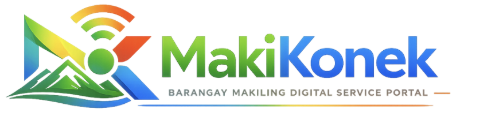
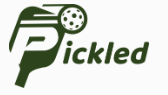
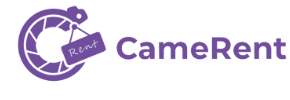
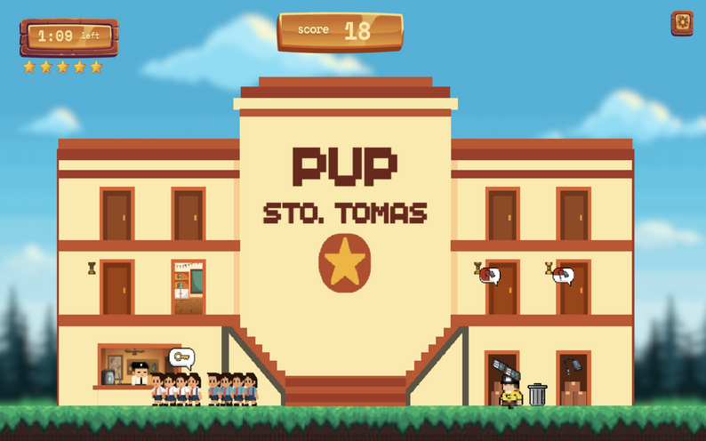
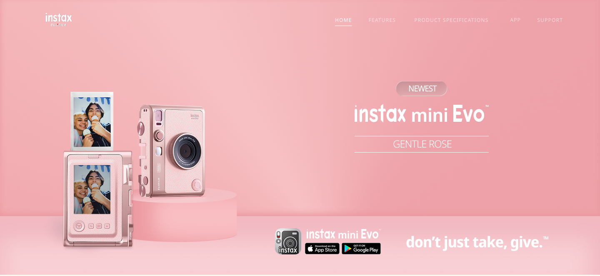

Discover the work
behind the interface.
Digital products, websites, and interactive ideas shaped by curiosity, design, and code.
Explore the collection ↓

MakiKonekBarangay Digital Service PortalE-commerceWeb DevelopmentView project details +
PROJECT 01 / WEB DEVELOPMENT
Barangay Service Portal. The earlier project record also describes it as a Barangay Digital Service Portal.
- Year
- 2026
- Role
- Frontend / UI
- Status
- Repository


PICKLEDCourt and Session Booking SystemWeb DevelopmentView project details +
PROJECT 02 / WEB DEVELOPMENT
Court and Events Booking Management System. The existing record lists database, scheduling, and management workflows as case-study topics.
- Year
- 2026
- Role
- Full-stack
- Status
- Live


CameRentCamera Rental WebsiteWeb DevelopmentView project details +
PROJECT 03 / WEB DEVELOPMENT
Camera Rental Website.
- Year
- 2025
- Role
- Frontend / UI
- Status
- Live

PUP DashEducational 2D GameGame DevelopmentView project details +
PROJECT 04 / GAME DEVELOPMENT
The existing project record notes the gameplay concept, Python implementation, and UI direction as case-study topics.
- Year
- 2025
- Role
- Game UI / Dev
- Technology
- Python
- Status
- Repository

Instax Mini EvoProduct Website PrototypeE-commerceWeb DevelopmentView project details +
PROJECT 05 / PRODUCT WEBSITE
Instax Mini Evo product website prototype. The available project link opens a Figma prototype.
Open Figma prototype ↗